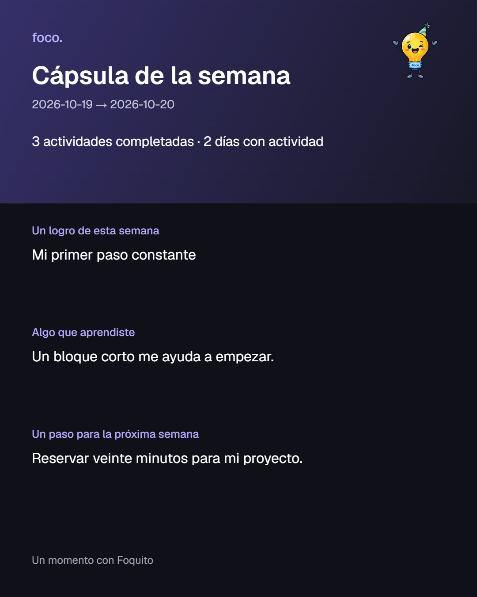

← Informe del proyectoSeis momentos con Foquito.
Elegir, ordenar, avanzar y reconocer lo que hiciste. Las nuevas acciones se encuentran en Sugerencias, Hoy y Progreso. Capturas reales del navegador con datos de ejemplo.
Sugerencias · antes y después
Antes · 844c435 Con los nuevos momentos
Con los nuevos momentos
Progreso · antes y después
Antes · 844c435 Con los nuevos momentos
Con los nuevos momentos
La versión anterior fallaba con actividades sin horario: se excluyó esa actividad en las capturas anteriores para comparar el diseño. Los totales pueden variar.
Las seis experiencias
Rescatame el día Tengo un rato
Tengo un rato Vaciar la cabeza
Vaciar la cabeza Cerrar mi día
Cerrar mi día Lo que te funciona
Lo que te funciona Cápsula de la semana
Cápsula de la semana
Un recuerdo para guardar
Cierres y cápsulas se conservan por usuario en este dispositivo. La tarjeta se puede descargar; no se publica ni se envía a nadie.

Verificado en claro/oscuro, 390/1280 px, español/inglés y ampliación al 200 %. Falta la prueba con una cuenta real y en un iPhone físico.